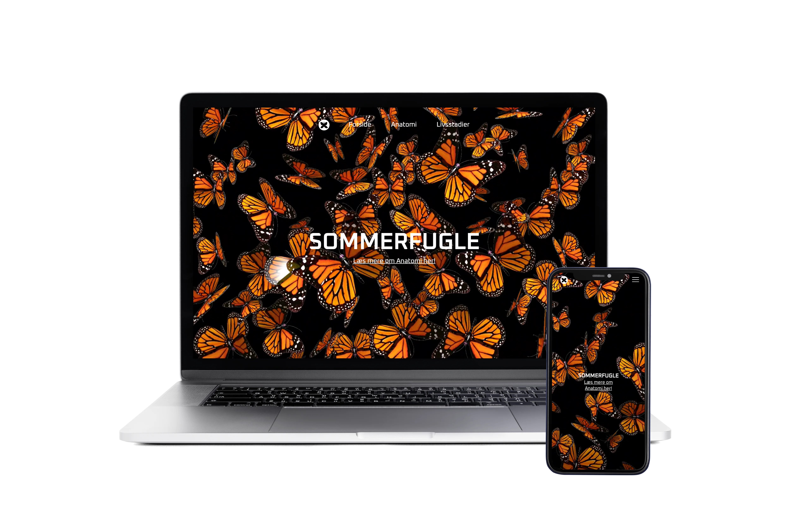
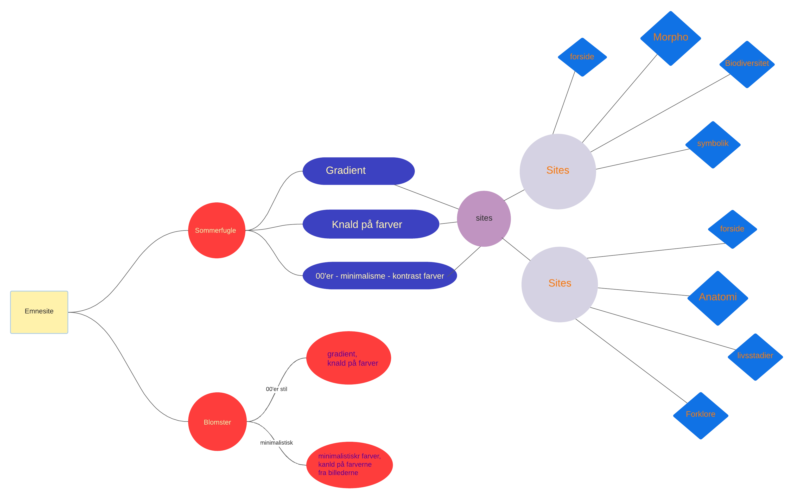
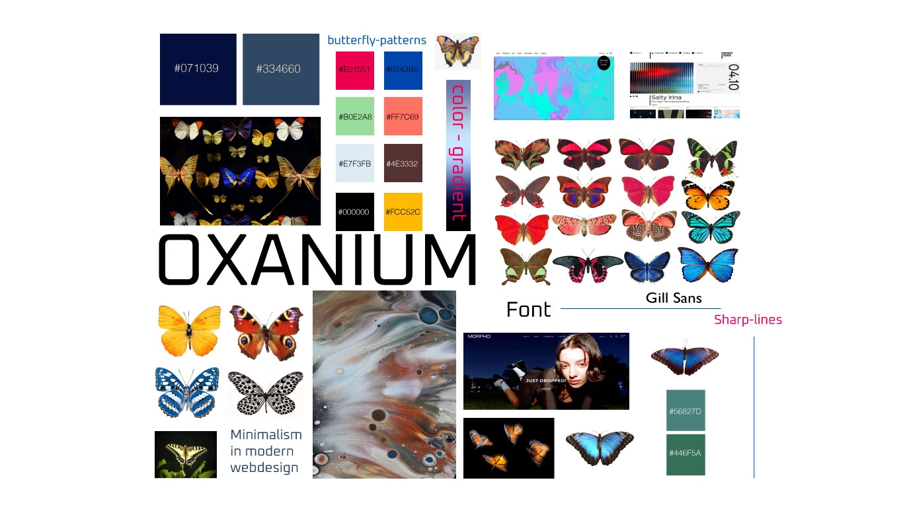
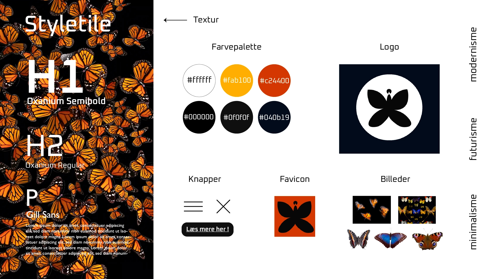
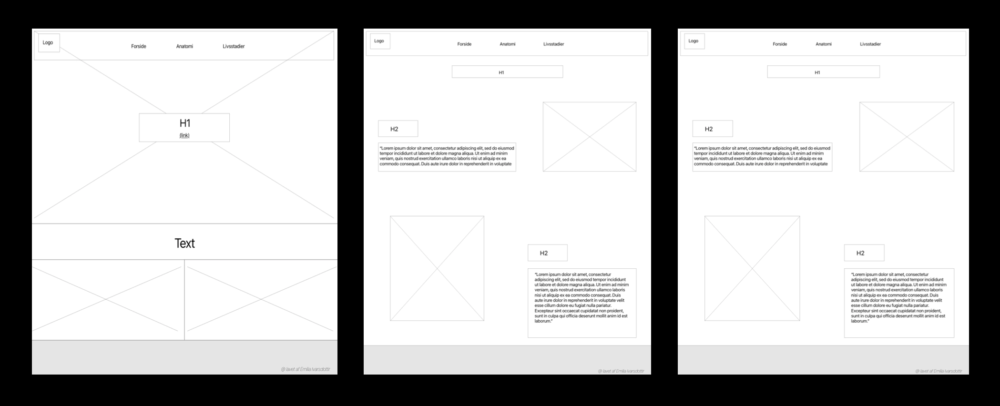
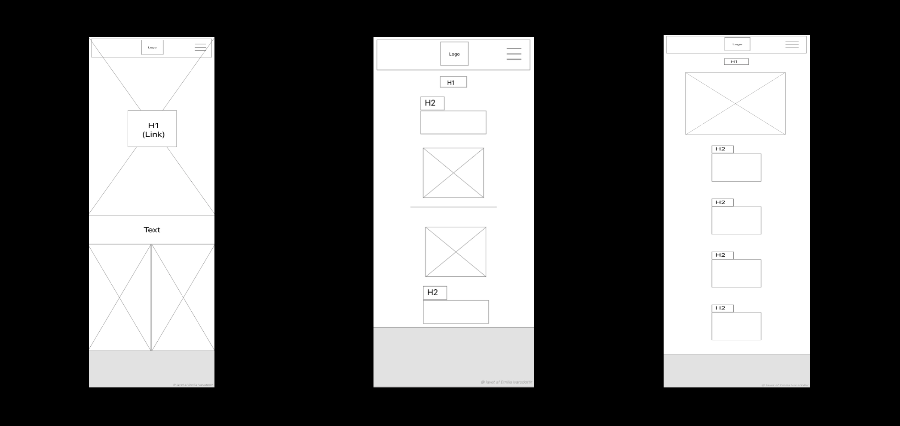
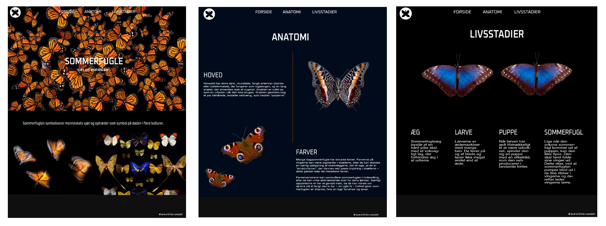

02
WEB
STUDIESTARTSPRØVEN

I første tema stiftede jeg bekendtskab til HTML og CSS, samt brugen af CSS grid, media-queries og flex. Jeg anvendte Visual Studio Code til at kode i, og FileZila til at overføre filerne til domænet. Derudover blev vi også introduceret til media queries. Jeg blev familiær med en struktureret mappestruktur, samt fil og billede formater.
Denne viden, overførte jeg og implementeret i min studiestartsprøve. Al indhold og tekst var produceret på forhånd, som jeg inkorporerede i et responsivt website. Først et mobilsite og efterfølgende desktop, som blev kodet ud fra wireframes og layoutdiagrammer.


EMNESITE

I denne opgave skulle vi udarbejde et responsivt website ud fra et valgfrit emne. Vi blev introduceret til idéudvikling, designkonventioner, gestaltlove, kontrast, fonte og komposition, laytout og grid. I kodning arbejdede vi med html og css, herunder grid og flex layout. Vi arbejdede responsivt med media-queries. Jeg besluttede mig for emnet sommerfugle, derefter udarbejdede jeg et moodboard, et styletile med fokus på designprincipper, samt wireframes og mockup.
IDÉ-GENERERING
Jeg begyndte min idéudvikling ved at lave et mindmap for at strukturere og visualisere mine tanker og idéer. Efter at have forelsket mig i sommerfuglenes mønstre i deres vinger, der byder på kontraster, gradienter, abstrakte mønstre og kontrastfarver, besluttede jeg mig for at fokusere på emnet sommerfugle.
MOODBOARD
I min designproces valgte jeg en modernistisk stil til mit website med fokus på billeder, mønstre, skarpe linjer og kontraster. Målet var at skabe en iøjnefaldende og moderne oplevelse.
LOGOPROCESS
I begyndelsen af min logoproces var jeg bevidst om, at jeg ønskede at skabe noget, der var både enkelt og unikt. Derfor besluttede jeg mig for at skabe en illustration af en simpel sommerfugl, hvor følehornene er forbundet. Ved at anvende gestaltloven "loven om nærhed" ønskede jeg at fremhæve det faktum, at selvom sommerfuglen og dens følehorn ikke er fysisk forbundet, er de alligevel indbyrdes forbundne og beslægtede på en betydningsfuld måde.
STYLETILE
Jeg har valgt at bruge "Oxanium" fonten til mine h1 og h2 overskrifter for at skabe en futuristisk/digital stil, der tilføjer et spændende element til mit design. På forsiden har jeg implementeret en baggrundsvideo for at fange brugerens opmærksomhed og støtte det valgte emne. Derudover har jeg valgt at bruge fritlagte billeder for at opnå et simpelt og minimalistisk udtryk, samtidig med at det tydeligt fremhæver sommerfuglenes farver og mønstre. Farverne på baggrunden er nøje valgt for at matche forsiden (sort/mørkeblå) og skabe kontrast mellem baggrunden og billedernes farver.
WIREFRAMES
 Jeg har skabt forskellige layout og kompositioner på hver side for at tilføje nyt og spændende indhold, når brugeren navigerer mellem siderne. Dog har jeg bevaret en rød tråd mellem siderne for at sikre en sammenhængende oplevelse og give en følelse af at være på samme hjemmeside. Desuden har jeg valgt at variere tekstlayoutet i lighed med grid-layoutet på hver side for at skabe en unik og interessant oplevelse for brugeren. For eksempel på "livsstader" siden undlod jeg at nævne direkte, at sommerfuglen gennemgår 4 livsstadier. I stedet markerede jeg tydeligt de 4 stadier ved at placere dem i 4 kolonner på en række.
PROTOTYPE
Efter at have fastlagt stil og content, begyndte jeg at arbejde på prototypen. Prototypen er udarbejdet ud fra moodboard, styletile, og wireframes